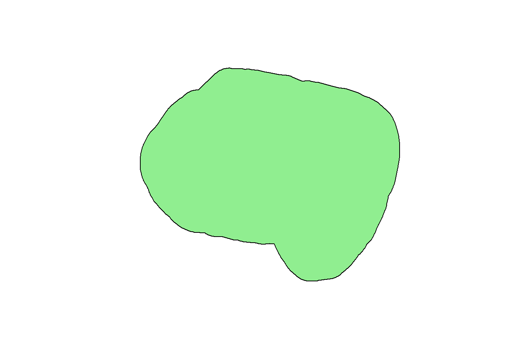
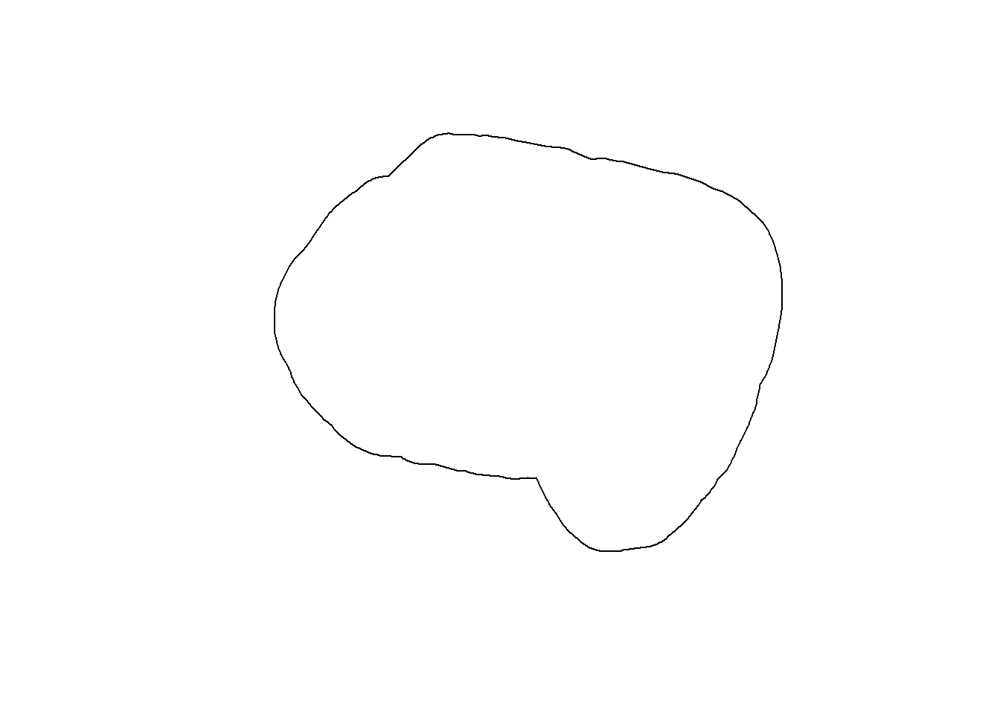
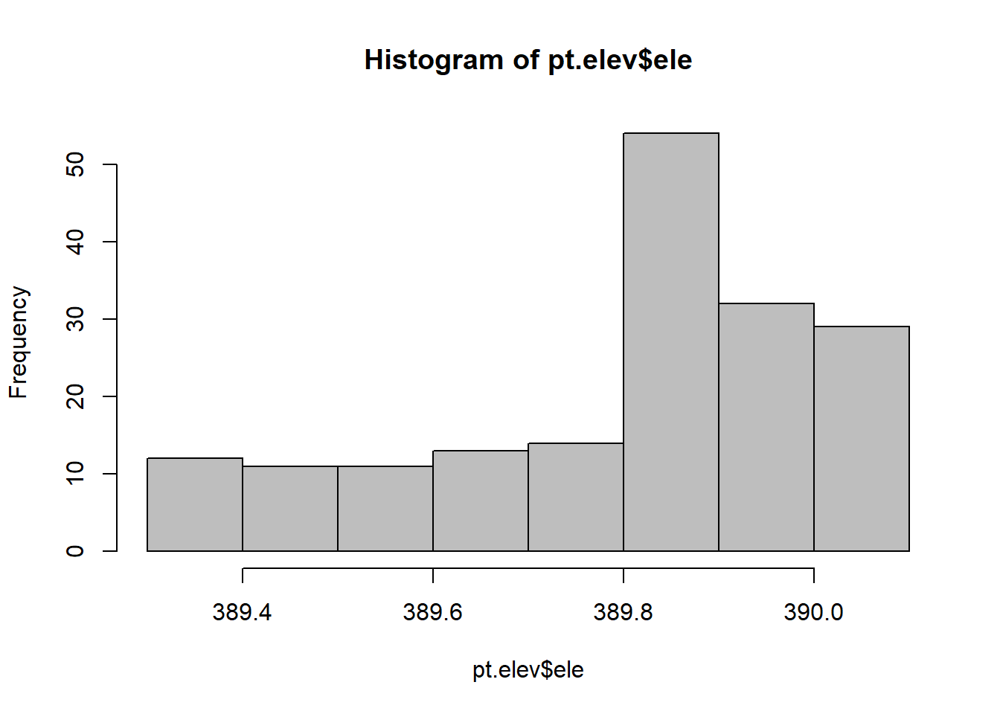
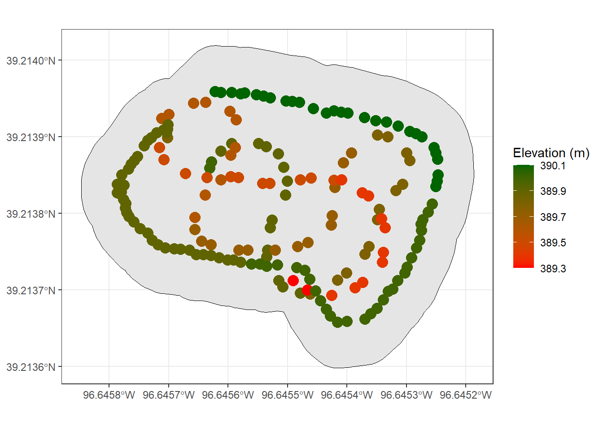
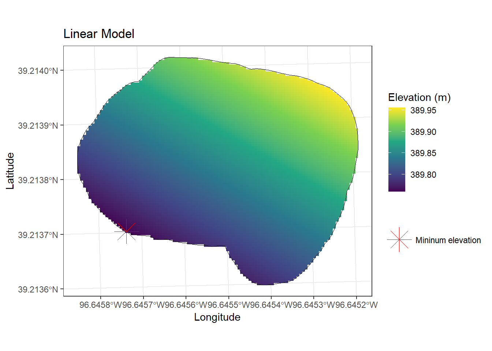
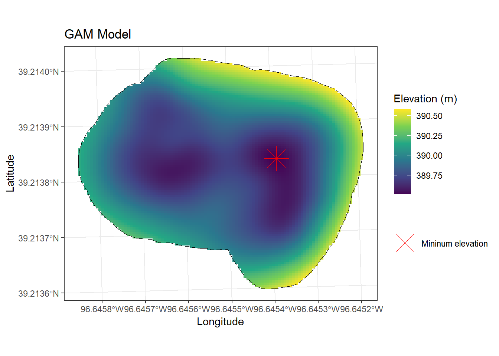
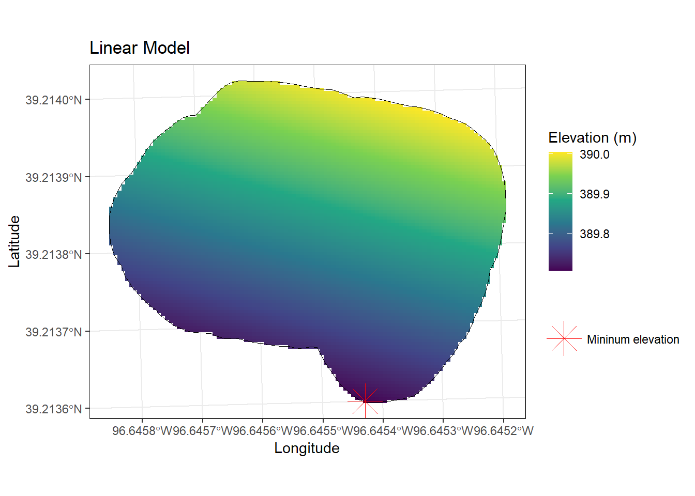
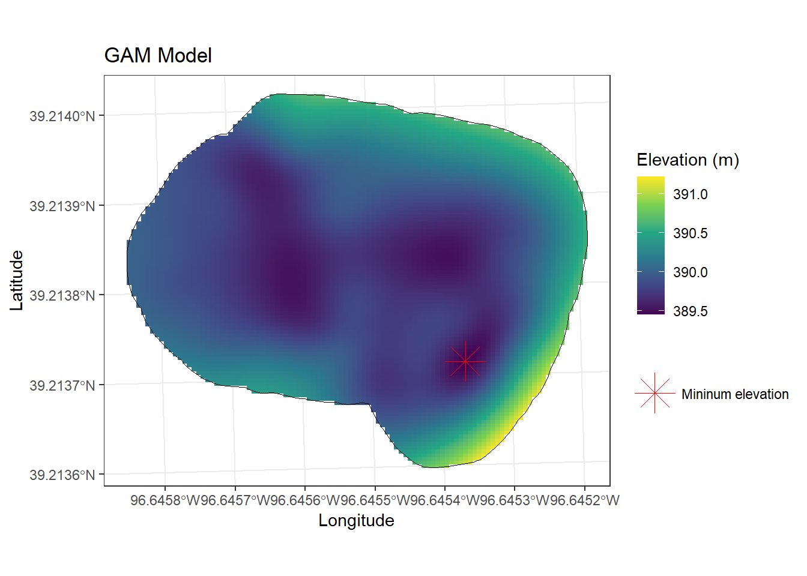
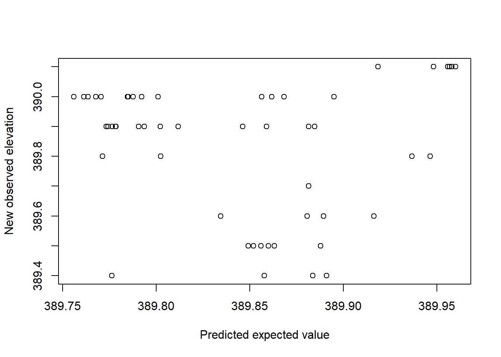
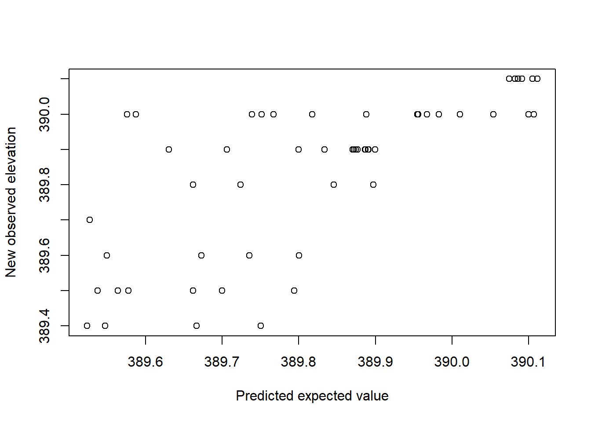

29 Activity 2
The goal of this activity is to visualize the elevation data of an experimental site in the North Agronomy Farm at Kansas State University. Also my goal is to predict elevation with different models and infer at what location we observe the lowest and highest elevation point.
29.2 Chose an area on or close to campus where it is easy for you to understand how the elevation changes. For example, I chose the parking lot outside of Dickens Hall. Using a smartphone record the elevation at several locations (points) within the area you chose. I recommend using the app Strava, but you can use whatever you want.
The data was collected near where I live.
29.3 Obtain a .gpx or .csv file for your elevation data. At minimum the file should contain the location and time of the elevation measurements.
Two .gpx files were generated: one for the area boundaries and one for the elevation data.
29.4 Plot/map your elevation data. I would recommend using R and/or Google earth.
download.file("http://www2.census.gov/geo/tiger/GENZ2015/shp/cb_2015_us_state_20m.zip", destfile = "states.zip")
unzip("states.zip")
sf.us <- st_read("cb_2015_us_state_20m.shp")## Reading layer `cb_2015_us_state_20m' from data source
## `C:\Users\luizfelipeaa\OneDrive - Kansas State University\Documents\STAT764\stat764-portfolio\cb_2015_us_state_20m.shp' using driver `ESRI Shapefile'
## Simple feature collection with 52 features and 9 fields
## Geometry type: MULTIPOLYGON
## Dimension: XY
## Bounding box: xmin: -179.1743 ymin: 17.91377 xmax: 179.7739 ymax: 71.35256
## Geodetic CRS: NAD83sf.kansas <- sf.us[48,6]
sf.kansas <- as(sf.kansas, 'Spatial')
url1 <- "https://www.dropbox.com/scl/fi/cfvdqoe9y7nx2yebvlusf/hill2.gpx?rlkey=orq8idvojvgxyo0orwtg0w5g4&dl=1"
pt.study.area <- st_read(dsn=url1,layer="track_points")## Reading layer `track_points' from data source `https://www.dropbox.com/scl/fi/cfvdqoe9y7nx2yebvlusf/hill2.gpx?rlkey=orq8idvojvgxyo0orwtg0w5g4&dl=1' using driver `GPX'
## Simple feature collection with 99 features and 26 fields
## Geometry type: POINT
## Dimension: XY
## Bounding box: xmin: -96.64579 ymin: 39.21366 xmax: -96.64525 ymax: 39.21396
## Geodetic CRS: WGS 84sf.study.area <- st_polygon(list(rbind(st_coordinates(pt.study.area),st_coordinates(pt.study.area)[1,])))
sf.study.area <- st_buffer(sf.study.area, .00006)
sf.study.area <- st_sf(st_sfc(sf.study.area), crs = crs(sf.kansas))
# Plot study area
plot(sf.study.area, col="lightgreen")
# Obtain elevation data
url2 <- "https://www.dropbox.com/scl/fi/ylx9yc62ajeba5wd7iuum/hill1.gpx?rlkey=ah3qh1ogtq6z41wxs2c303e2a&dl=1"
pt.elev <- st_read(dsn=url2,layer="track_points")## Reading layer `track_points' from data source `https://www.dropbox.com/scl/fi/ylx9yc62ajeba5wd7iuum/hill1.gpx?rlkey=ah3qh1ogtq6z41wxs2c303e2a&dl=1' using driver `GPX'
## Simple feature collection with 92 features and 26 fields
## Geometry type: POINT
## Dimension: XY
## Bounding box: xmin: -96.64572 ymin: 39.21369 xmax: -96.6453 ymax: 39.21395
## Geodetic CRS: WGS 8429.5 Explore your elevation data. For example, are there any unique features of your data? Do your data contain obvious measurement error (e.g., an elevation that can’t possibly be true)? Really try to explore your data as best as possible using the plots/maps you made in.
From my perspective of the area where I collected the data, there appears to be measurement error in the data points. It seems that the GPS was not able to accurately distinguish some of the locations, possibly because I was collecting the data at varying speeds.


## Min. 1st Qu. Median Mean 3rd Qu. Max.
## 389.3 389.7 389.9 389.8 390.0 390.1ggplot() +
geom_sf(data=sf.study.area, color = "black") +
geom_sf(data=pt.elev, aes(color = ele), size = 4)+
scale_color_gradient(low="red", high="darkgreen", name = "Elevation (m)")+
theme_bw()
29.6 Write out the goals that you wish to accomplish using your elevation data. For example, my goal was to make a map of the Dicken’s Hall parking lot. This involves using the elevation data I collected to make predictions of the elevation at any possible spatial locations within the parking lot. I would also like to make inference about the location where the elevation is lowest within the parking lot.
My goal is to obtain the most precise predictions of the area’s elevation and determine the location with the lowest elevation.
29.7 Write out several statistical or machine learning models that you think you can use to answer the questions/goals you wrote in prompt #5. Be as creative and inclusive here. For each statistical or machine learning model, make sure you explain each component (piece) of the model
Linear model:
\(y_i = \beta_0 + \beta_1 \cdot Long + \beta_2 \cdot Long^2 + \beta_3 \cdot Lat + \beta_4 \cdot Lat^2 + \epsilon_i\)
\(\epsilon_i \sim \mathcal{N}(0, \sigma^2)\)
GAM Model:
\(y_i= \beta_0 + f(Long, Lat) + \epsilon_i\)
\(\epsilon_i \sim \mathcal{N}(0, \sigma^2)\)
29.8 Of the models you developed in prompt #6, find (or develop) software to fit at least two of these models to your elevation data. Note that in a perfect world, you would be able to either find existing software or develop new programs that enable you to fit any statistical or machine learning model you want. In reality, you may may end up having to make some unwanted changes to your models in prompt #6 to be able to find existing software to fit these models to the data.
Linear model
# Statistical analysis 1: non-hierarchical linear model with iid errors
m1 <- lm(elev~s1+I(s1^2)+s2+I(s2^2),data=df.elev)
# Make raster of study area to be able to map predictions from m1
rl.E.y_lin <- raster(,nrow=100,ncols=100,ext=extent(sf.study.area.utm),crs=crs(sf.study.area.utm))
# Make data.frame to be able to make predictions at each pixel (cell of raster)
df.pred <- data.frame(elev = NA,
s1 = xyFromCell(rl.E.y_lin,cell=1:length(rl.E.y_lin[]))[,1],
s2 = xyFromCell(rl.E.y_lin,cell=1:length(rl.E.y_lin[]))[,2])
# Make spatial predictions at each pixel
df.pred$elev <- predict(m1,df.pred[,2:3])## Warning in predict.lm(m1, df.pred[, 2:3]): prediction from a rank-deficient fit may be misleading## elev s1 s2
## 1 389.8696 703247.1 4343168
## 2 389.8708 703247.7 4343168
## 3 389.8720 703248.2 4343168
## 4 389.8732 703248.8 4343168
## 5 389.8744 703249.4 4343168
## 6 389.8757 703250.0 4343168# Fill raster file with predictions
rl.E.y_lin[] <- c(df.pred$elev)
rl.E.y_lin <- mask(rl.E.y_lin,sf.study.area.utm)
# Estimate coordinates and amount of maximum elevation
xyFromCell(rl.E.y_lin,cell=which.max(rl.E.y_lin[]))## x y
## [1,] 703297.8 4343162## [1] 389.9558rl.E.y_lin_df <- as.data.frame(raster::rasterToPoints(rl.E.y_lin))
colnames(rl.E.y_lin_df) <- c("lon", "lat", "elevation")
min_elevation_value_lin <- min(rl.E.y_lin_df$elevation)
min_elevation_point_df_lin <- rl.E.y_lin_df[which.min(rl.E.y_lin_df$elevation), ]
ggplot() +
geom_raster(data = rl.E.y_lin_df, aes(x = lon, y = lat, fill = elevation)) +
geom_sf(data = sf.study.area.utm, fill = NA, color = "black") +
geom_point(data = min_elevation_point_df_lin,
aes(x = lon, y = lat, color = "Mininum elevation"), size = 8, shape = 8) +
labs(title = "Linear Model", x = "Longitude", y = "Latitude", color = "") +
scale_fill_viridis_c(name = "Elevation (m)") +
scale_color_manual(values = c("Mininum elevation" = "red")) +
theme_bw()
GAM model
# Try low-rank Gaussian process (i.e., modern kriging model)
library(mgcv)
m2 <- gam(elev~s(s1,s2,bs="gp",k=50),data=df.elev)
# Make raster of study area to be able to map predictions from m2
rl.E.y_gam <- raster(,nrow=100,ncols=100,ext=extent(sf.study.area.utm),crs=crs(sf.study.area.utm))
# Make data.frame to be able to make predictions at each pixel (cell of raster)
df.pred <- data.frame(elev = NA,
s1 = xyFromCell(rl.E.y_gam,cell=1:length(rl.E.y_gam[]))[,1],
s2 = xyFromCell(rl.E.y_gam,cell=1:length(rl.E.y_gam[]))[,2])
# Make spatial predictions at each pixel
df.pred$elev <- predict(m2,df.pred[,2:3])
# View first 6 rows of predictions
head(df.pred) ## elev s1 s2
## 1 390.4175 703247.1 4343168
## 2 390.4056 703247.7 4343168
## 3 390.3936 703248.2 4343168
## 4 390.3814 703248.8 4343168
## 5 390.3692 703249.4 4343168
## 6 390.3570 703250.0 4343168# Fill raster file with predictions
rl.E.y_gam[] <- c(df.pred$elev)
rl.E.y_gam <- mask(rl.E.y_gam,sf.study.area.utm)
# Estimate coordinates and amount of maximum elevation
xyFromCell(rl.E.y_gam,cell=which.max(rl.E.y_gam[]))## x y
## [1,] 703297.8 4343162## [1] 390.5805rl.E.y_gam_df <- as.data.frame(raster::rasterToPoints(rl.E.y_gam))
colnames(rl.E.y_gam_df) <- c("lon", "lat", "elevation")
min_elevation_value <- min(rl.E.y_gam_df$elevation)
min_elevation_point_df <- rl.E.y_gam_df[which.min(rl.E.y_gam_df$elevation), ]
ggplot() +
geom_raster(data = rl.E.y_gam_df, aes(x = lon, y = lat, fill = elevation)) +
geom_sf(data = sf.study.area.utm, fill = NA, color = "black") +
geom_point(data = min_elevation_point_df,
aes(x = lon, y = lat, color = "Mininum elevation"), size = 8, shape = 8) +
labs(title = "GAM Model", x = "Longitude", y = "Latitude", color = "") +
scale_fill_viridis_c(name = "Elevation (m)") +
scale_color_manual(values = c("Mininum elevation" = "red")) +
theme_bw()
29.10 Based on the material in Chapter 6 of Spatio-Temporal Statistics with R and our discussion in class on March 26, compare, check and evaluate the two models from #8.
set.seed(123)
trainIndices <- sample(1:nrow(df.elev), size = floor(0.7 * nrow(df.elev)))
# Subset the data into train and test sets
train.elev <- df.elev[trainIndices, ]
test.elev <- df.elev[-trainIndices, ]Linear model (Train set)
# Statistical analysis 1: non-hierarchical linear model with iid errors
m1 <- lm(elev~s1+I(s1^2)+s2+I(s2^2),data=train.elev)
# Make raster of study area to be able to map predictions from m1
rl.E.y_lin <- raster(,nrow=100,ncols=100,ext=extent(sf.study.area.utm),crs=crs(sf.study.area.utm))
# Make data.frame to be able to make predictions at each pixel (cell of raster)
df.pred <- data.frame(elev = NA,
s1 = xyFromCell(rl.E.y_lin,cell=1:length(rl.E.y_lin[]))[,1],
s2 = xyFromCell(rl.E.y_lin,cell=1:length(rl.E.y_lin[]))[,2])
# Make spatial predictions at each pixel
df.pred$elev <- predict(m1,df.pred[,2:3])## Warning in predict.lm(m1, df.pred[, 2:3]): prediction from a rank-deficient fit may be misleading## elev s1 s2
## 1 389.9443 703247.1 4343168
## 2 389.9453 703247.7 4343168
## 3 389.9464 703248.2 4343168
## 4 389.9475 703248.8 4343168
## 5 389.9486 703249.4 4343168
## 6 389.9497 703250.0 4343168# Fill raster file with predictions
rl.E.y_lin[] <- c(df.pred$elev)
rl.E.y_lin <- mask(rl.E.y_lin,sf.study.area.utm)
# Estimate coordinates and amount of maximum elevation
xyFromCell(rl.E.y_lin,cell=which.max(rl.E.y_lin[]))## x y
## [1,] 703293.2 4343164## [1] 390.0053rl.E.y_lin_df <- as.data.frame(raster::rasterToPoints(rl.E.y_lin))
colnames(rl.E.y_lin_df) <- c("lon", "lat", "elevation")
min_elevation_value_lin <- min(rl.E.y_lin_df$elevation)
min_elevation_point_df_lin <- rl.E.y_lin_df[which.min(rl.E.y_lin_df$elevation), ]
ggplot() +
geom_raster(data = rl.E.y_lin_df, aes(x = lon, y = lat, fill = elevation)) +
geom_sf(data = sf.study.area.utm, fill = NA, color = "black") +
geom_point(data = min_elevation_point_df_lin,
aes(x = lon, y = lat, color = "Mininum elevation"), size = 8, shape = 8) +
labs(title = "Linear Model", x = "Longitude", y = "Latitude", color = "") +
scale_fill_viridis_c(name = "Elevation (m)") +
scale_color_manual(values = c("Mininum elevation" = "red")) +
theme_bw()
GAM model (Train set)
# Try low-rank Gaussian process (i.e., modern kriging model)
library(mgcv)
m2 <- gam(elev~s(s1,s2,bs="gp",k=50),data=train.elev)
# Make raster of study area to be able to map predictions from m2
rl.E.y_gam <- raster(,nrow=100,ncols=100,ext=extent(sf.study.area.utm),crs=crs(sf.study.area.utm))
# Make data.frame to be able to make predictions at each pixel (cell of raster)
df.pred <- data.frame(elev = NA,
s1 = xyFromCell(rl.E.y_gam,cell=1:length(rl.E.y_gam[]))[,1],
s2 = xyFromCell(rl.E.y_gam,cell=1:length(rl.E.y_gam[]))[,2])
# Make spatial predictions at each pixel
df.pred$elev <- predict(m2,df.pred[,2:3])
# View first 6 rows of predictions
head(df.pred) ## elev s1 s2
## 1 390.1689 703247.1 4343168
## 2 390.1676 703247.7 4343168
## 3 390.1663 703248.2 4343168
## 4 390.1650 703248.8 4343168
## 5 390.1637 703249.4 4343168
## 6 390.1626 703250.0 4343168# Fill raster file with predictions
rl.E.y_gam[] <- c(df.pred$elev)
rl.E.y_gam <- mask(rl.E.y_gam,sf.study.area.utm)
# Estimate coordinates and amount of maximum elevation
xyFromCell(rl.E.y_gam,cell=which.max(rl.E.y_gam[]))## x y
## [1,] 703293.2 4343125## [1] 391.2241rl.E.y_gam_df <- as.data.frame(raster::rasterToPoints(rl.E.y_gam))
colnames(rl.E.y_gam_df) <- c("lon", "lat", "elevation")
min_elevation_value <- min(rl.E.y_gam_df$elevation)
min_elevation_point_df <- rl.E.y_gam_df[which.min(rl.E.y_gam_df$elevation), ]
ggplot() +
geom_raster(data = rl.E.y_gam_df, aes(x = lon, y = lat, fill = elevation)) +
geom_sf(data = sf.study.area.utm, fill = NA, color = "black") +
geom_point(data = min_elevation_point_df,
aes(x = lon, y = lat, color = "Mininum elevation"), size = 8, shape = 8) +
labs(title = "GAM Model", x = "Longitude", y = "Latitude", color = "") +
scale_fill_viridis_c(name = "Elevation (m)") +
scale_color_manual(values = c("Mininum elevation" = "red")) +
theme_bw()
29.11 Check model performance
Linear model (Test set)
# Compare point prediction of the the expected value of elevation (E(y)) to
# observed records from new data set.
E.y.Linear <- predict(m1,newdata=test.elev)## Warning in predict.lm(m1, newdata = test.elev): prediction from a rank-deficient fit may be misleading
# Quantify predictive accuracy using scoring rule
# For more details see Ch.6 or https://www.annualreviews.org/content/journals/10.1146/annurev-statistics-062713-085831
sum(dnorm(test.elev$elev,E.y.Linear,log=TRUE)) # logarithmic scoring rule (proper scoring rule for linear model)## [1] -50.14819mean((test.elev$elev - E.y.Linear)^2) # Mean square error. Commonly used scoring rule, but not proper scoring rule for ALL situations## [1] 0.05450753mean(abs(test.elev$elev - E.y.Linear)) # Mean absolute error. Commonly used scoring rule, but not proper scoring rule for ALL situations## [1] 0.2007308# Quantify calibration of predictive intervals. Note that the code below only works
# with the linear model (i.e., lm function). It is somewhat difficult or impossible to
# get prediction intervals from the other models (e.g., difficult = gam; impossible = regression tree)
PI.Linear <- predict(m1,newdata=test.elev,
interval = c("prediction"),
level = 0.95)## Warning in predict.lm(m1, newdata = test.elev, interval = c("prediction"), : prediction from a rank-deficient fit may be misleading# Determine what % of the new observations fall within the
# prediction intervals. This % is called calibration. A 95%
# prediction interval should cover 95% of new observations
# if it is calibrated and the model doesn't have issues that
# need to be fixed.
mean(ifelse(test.elev$elev>PI.Linear[,2],1,0)*ifelse(test.elev$elev<PI.Linear[,3],1,0))## [1] 0.9433962GAM model (Test set)
# Compare point prediction of the the expected value of elevation (E(y)) to
# observed records from new data set.
E.y.GAM <- predict(m2,newdata=test.elev)
plot(E.y.GAM,test.elev$elev,xlab="Predicted expected value",ylab="New observed elevation")
# Quantify predictive accuracy using scoring rule
# For more details see Ch.6 or https://www.annualreviews.org/content/journals/10.1146/annurev-statistics-062713-085831
sum(dnorm(test.elev$elev,E.y.GAM,log=TRUE)) # logarithmic scoring rule (proper scoring rule for linear model)## [1] -49.33706mean((test.elev$elev - E.y.GAM)^2) # Mean square error. Commonly used scoring rule, but not proper scoring rule for ALL situations## [1] 0.02389873mean(abs(test.elev$elev - E.y.GAM)) # Mean absolute error. Commonly used scoring rule, but not proper scoring rule for ALL situations## [1] 0.1105208Overall, the GAM model resulted superior compared to the linear model. For all the scoring rules, the GAM model showed a higher predictive accuracy.